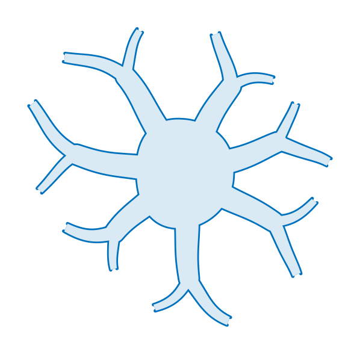
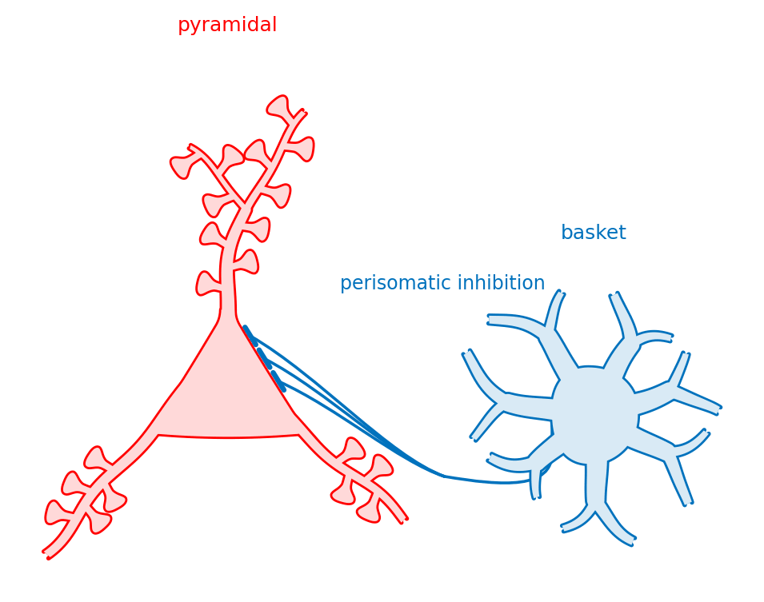
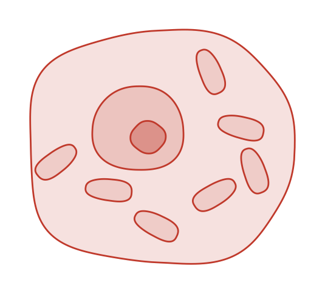
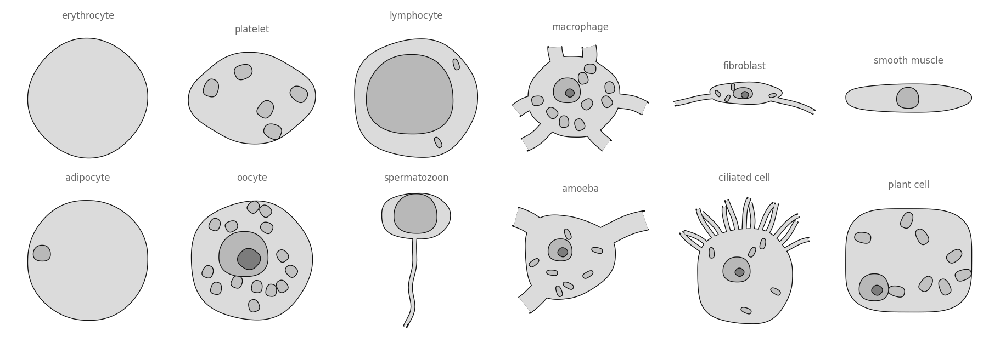
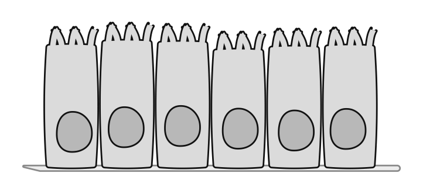
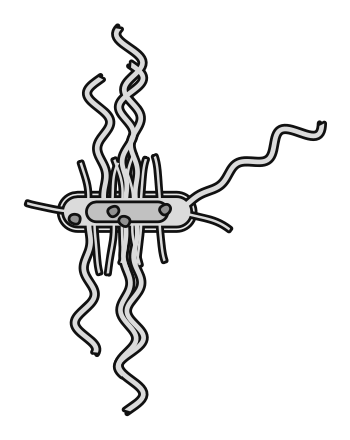

Bio-inspired vector drawings
for papers, posters and slides
Hand-drawn shapes, turned into maths, placeable anywhere. Every drawing below is a few parameters and a seed — not a file someone saved.
9 examples · 48 figures · every one a parameter away from the next
 Neurons
Pyramidal cell
A triangular soma with spiny dendrites out of it — apical up, basals down — soma, dendrites and every spine forming one unbroken outline.
neuro.Pyramidal
Neurons
Pyramidal cell
A triangular soma with spiny dendrites out of it — apical up, basals down — soma, dendrites and every spine forming one unbroken outline.
neuro.Pyramidal

Neurons Basket cell A round soma with smooth dendrites leaving in every direction — the counterpart to the pyramidal cell, drawn to be told apart from it at a glance. neuro.Basket Dendrites & spines
Dendritic spine
The shape biodraw grew out of, and the clearest example of why it traces rather than synthesises.
profile.get('spine')Branch
Dendrites & spines
Dendritic spine
The shape biodraw grew out of, and the clearest example of why it traces rather than synthesises.
profile.get('spine')Branch

Circuits Wiring Everything needed to connect one cell to another: connectors, and the endcaps that say what a connection is. connectconnect_treeconnectors.endcap Circuits
Circuit motifs
Cells wired to each other — which is what everything else in this library was building toward.
neuro.Pyramidalneuro.Basketconnect_tree
Circuits
Circuit motifs
Cells wired to each other — which is what everything else in this library was building toward.
neuro.Pyramidalneuro.Basketconnect_tree

Cells & tissues Generic cell A body, a nucleus, and whatever is loose in the cytoplasm. The first shape in this library that is not one unbroken outline. cells.Blobcore.scattershape.Layer
Cells & tissues Cell atlas Twelve cells a reader can name, from one class and no new code. The unit of documentation is a variant, and this is what that buys. cells.Blob
Cells & tissues Epithelial sheet A row of cells standing on a basement membrane — many cells that must not become one. cells.Sheetshape.Layer
Microbes Bacteria A capsule body and what is hung off it. The named forms — coccus, bacillus, vibrio, spirillum — are settings of three knobs, so the space between them is drawable too. micro.Bacteriumpaths.tubeNothing matches that.
Why not a stock illustration?
Because you almost never want the picture — you want a variation on it. The same cell at three spine densities, this epithelium curved into a duct, that neuron with one more basal because the panel beside it has two. With a fixed asset that means pushing points by hand, and the figure stops being reproducible the moment you do.
There are good free libraries of scientific art, and nothing here competes with them: if you need a virion or a centrifuge, download one. What a stock asset cannot do is become the next one. Here a variant is a parameter and a rebuild is one command.
We already spent the tokens generating these drawings.
Let's not spend them again.
Deriving the shape of a dendritic spine — tracing it, getting the neck to stretch without inflating the head, finding out that a mirrored fork reads as a symbol rather than a bifurcation — took real work, once. None of it should have to be paid for a second time, by the next person or the next agent. That is the whole of what this library is: that work, kept.
Described, not typed
Most figures built with this will never be written by hand. You install it, point an agent at it, and describe what you want — which is why the API is objects with anchors for people, and introspection and checks for agents.
Three skills ship with the library and are the supported way to drive it:
draw-a-figure— building a figure from shapes that already exist.review-a-drawing— the numeric checks to run before calling a drawing finished. An agent cannot see the figure, so every check is a measurement.trace-a-shape— turning a photograph of your own drawing into a shape the library does not have yet. Tracing is public API, not a story about how the bundled shapes were made.
Writing your own skill for your own figure style is the intended extension point — the contract is here.
pip install biodraw